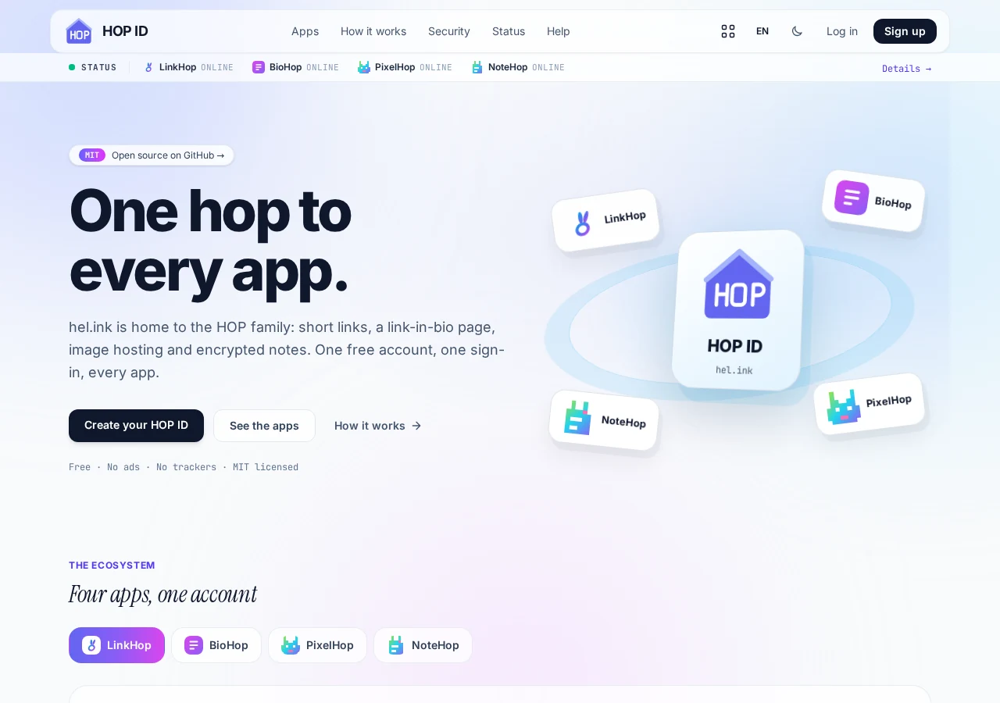
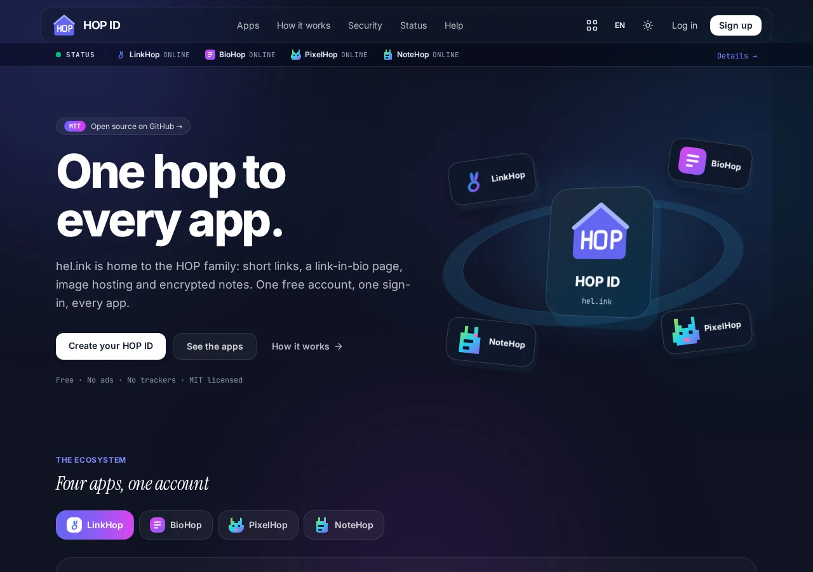

HOP · 家族中心与账户门户
一个 HOP 账户，畅行所有应用。
HEL.ink 是 HOP 的账户门户和家族目录。只需使用 HOP ID 登录一次，即可在 LinkHop、BioHop、PixelHop 和 NoteHop 之间无缝切换。
基于 MIT 许可证的免费开源软件。
功能特性
- 单点登录 (HOP ID)
一次登录覆盖所有 HOP 应用。签名凭证与链式登出确保会话一致。
- 统一应用启动器
随时随地一键在 LinkHop、BioHop、PixelHop 和 NoteHop 间切换。
- 共享数据库架构
共享单个 MySQL 或 SQLite 数据库存储身份，各应用独立的迁移账本避免冲突。
- 严格的安全防护
Argon2id 哈希、TOTP 双重认证、Cloudflare Turnstile 防护与邮箱验证。
- 实时看门狗监测
自动健康监测与延迟监控，零密钥泄露。
- 集中式家族资产
官方图标、家族字体（Inter、Instrument Serif、JetBrains Mono）和 3D 资源由 hel.ink 提供，并附带 SRI 校验。
- 细粒度 API 令牌
生成带权限范围的令牌，用于应用间通信与开发者自动化。
- 完全开源与自建
100% 自由开源。可独立运行 hub，也可在单个 VPS 上部署整个 HOP 生态。
自建您的 Hub
基于 MIT 许可证的免费开源软件。
HOP ID


常见问题
什么是 HOP ID？
HOP ID 是 HOP 家族的集中认证系统。拥有一个账户即可使用所有 HOP 应用。
我能单独运行 Hub 吗？
可以。Hub 可以作为独立的账号与目录服务运行，但配合 HOP 应用体验最佳。
单点登出如何工作？
从 Hub 登出将销毁本地会话，并向所有已连接的应用发送链式登出信号。
HEL.ink 是开源的吗？
是的，HEL.ink 和所有公开的 HOP 应用均采用宽松的 MIT 许可证。
HOP 家族
HEL.ink 是注重隐私的开源应用家族中心。
| 应用 | 功能 | 线上地址 | 代码 |
|---|---|---|---|
| HOP ID | 账户门户，HOP ID 登录 | hel.ink · hub.hel.ink | 本仓库 |
| LinkHop | 短链接与二维码生成 | link.hel.ink · hel.ink/l/{slug} | navi-crwn/LinkHop |
| BioHop | 个人主页与链接展示 | bio.hel.ink · hel.ink/b/{slug} | navi-crwn/BioHop |
| PixelHop | 图片与媒体存储托管 | pixel.hel.ink · p.hel.ink | navi-crwn/PixelHop |
| NoteHop | 客户端加密的私密便签 | note.hel.ink · n.hel.ink | navi-crwn/NoteHop |
帮助与支持
发现问题或需要协助？请在以下地址提交议题： GitHub Issues 或提交拉取请求。